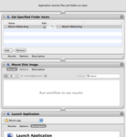

Locating Bitcoin's data directory
The data directory is the location where Bitcoin's data files are stored, including the wallet data file.
Gnu/Linux
By default Bitcoin will put its data here:
~/.bitcoin/
You need to do a "ls -a" to see directories that start with a dot.
If that's not it, you can do a search like this:
find / -name wallet.dat -print 2>/dev/null
To change the directory Bitcoin stores its data in: Run in terminal or script: ./bitcoin-qt -datadir=./?Directory Name
Mac OSX
By default Bitcoin will put its data here:
~/Library/Application Support/Bitcoin/
Windows
Go to Start -> Run (or press WinKey+R) and run this:
explorer %APPDATA%\Bitcoin
Bitcoin's data folder will open. For most users, this is one of the following locations:
C:\Documents and Settings\YourUserName\Application data\Bitcoin (Windows XP)
C:\Users\YourUserName\Appdata\Roaming\Bitcoin (Windows Vista and 7)
If you have trouble browsing to these folders, note that "AppData" and "Application data" are hidden by default.
Backing up your wallet files
Note: Using Dropbox to back up your Bitcoin data is not recommended as doing so introduces the following security concerns#Reception):
- Dropbox stores your encryption key (meaning that a disgruntled Dropbox employee or an attacker who gained access to the system could decrypt your Dropbox data and steal your bitcoins)
- the Dropbox client only needs a password for the first login. After it authenticates once, the server assigns it a token which it uses to show that, at one time, its user knew the password rather than sending the actual password (meaning that if you ever use the Dropbox client on another PC, that PC's users can access your Dropbox - even if you change your password - and can steal your bitcoins or get a virus that will steal your bitcoins).
For these reasons, an alternative that always uses password authentication such as Wuala should be used. Wuala's servers do not store your encryption key and the program authenticates with the password each time it is started.
Whether you use Dropbox as your backup or not, it is advised to use what Steve Gibson calls "pre-Internet encryption" which means to use some form of encryption on your files before you back them up, in case an attacker gains access to that backup. Make sure to pick a password that is memorable but secure.
The only file you need to back up is "wallet.dat" which can be done one of two ways. To make a copy of the wallet.dat file, ensure that Bitcoin is closed and copy this file somewhere else. The other way is to use the ?backupwallet JSON-RPC command to back up without shutting down Bitcoin.
Once a copy has been made, encrypt it, and put it in two or more safe locations. Consider the risk due to theft, fire, or natural disaster in proportion to the value of bitcoins stored in the wallet.
Backup wallet and blochain data
Follow these instructions to backup all the bitcoin data (wallet and block chains) to an encrypted disk image.
- Open Disk Utility
- Click New Image and choose a big enough size, 128-bit or 256-bit (faster or more secure) encryption and single partition.
- Save it somewhere you won't lose it (like your Wuala, Dropbox, Strongspace or whatever)
- Choose a safe and strong password
- Move everything from ~/Library/Application Support/Bitcoin/ to the image
- Symlink it back so the app would be able to use it
ln -s /Volumes/Bitcoin ~/Library/Application Support/Bitcoin
Don't forget to mount your image before using Bitcoin and unmount it after quitting.
Backing up just your wallet file
Follow these instructions to backup just the wallet.dat file. This results in a smaller disk image, but it's more complicated to do.
- Open Disk Utility
- Click New Image and choose a big enough size, 128-bit or 256-bit (faster or more secure) encryption and single partition.
- Save it somewhere you won't lose it (like your Wuala, Dropbox, Strongspace or whatever)
- Choose a safe and strong password
- Move your wallet.dat file to the image
- Symlink it back so the app would be able to use it
ln -s /Volumes/Bitcoin/wallet.dat ~/Library/Application Support/Bitcoin/wallet.dat
 Don't forget to mount your image before using Bitcoin and unmount after quitting it.
{kind=link}
Note: If you start the Bitcoin application without having the image mounted, the application will overwrite your symlink with a new wallet. If that happens, don't panic. Just delete the new wallet.dat, mount the image, and recreate the symlink like above.
Automation: You can create a small application using Automator (included in OS X) to automatically mount the wallet and then launch Bitcoin App. See the Screenshot on how to do this.
If one doesn't want to use encrypted Disk images, then a small shell script can be used instead that takes care of decrypting the wallet, launching bitcoin client, and encrypting it after the client exits. This script works on both OSX and Gnu/Linux: bitcoin-launch-script
Email-based Archival and Remote Backup
One of the simplest methods for storing an appropriately encrypted archive of your wallet.dat file is to send the archive as an email attachment to your own e-mail address. Services like Gmail use very comprehensive distributed networks that make the loss of data very unlikely. One can even obfuscate the name of the files within the archive, and name the archive something less inviting, such as: 'personal notes' or 'car insurance'.
Another solution is to use a file storage service like Wuala ( encrypted, instructions), Dropbox (after encrypting the wallet first) and others, including the more secure SpiderOak.
Automated backups using Cron, Bash and GNU/Linux
Linux users can setup backups using cron by telling it to run a backup script at set intervals of time. Run 'crontab -e' and add this line near the bottom:
01 * * * * /usr/local/bin/backupwallet.sh
This cron line will run the /usr/local/bin/backupwallet.sh script at the 01 minute of every hour. Remember to add a newline after the last line of the crontab file, or else the last line won't run. You may also wish to ignore the script's output by appending " > /dev/null 2>&1" to the line (this will also prevent emails from being sent).
Create /usr/local/bin/backupwallet.sh:
#!/bin/bash
# /usr/local/bin/backupwallet.sh
#
# Performs backup of bitcoin wallet.
#
# Written by: https://en.bitcoin.it/wiki/Securing_your_wallet
#
# Standard Options
#
TS=$(date "+%Y%m%d-%H%M")
WALLET=/tmp/wallet-${TS}
WALLET_E=/tmp/wallet-${TS}.crypt
BITCOIN=bitcoind # /path/to/bitcoind
GPG=gpg # /path/to/gpg
GPG_USER=username # Username of gpg recipient. User should have gpg setup.
RM=rm
RM_OPTS='--force'
USE_SHRED=0 # Flip to 1 to use `shred` instead of `rm`.
SHRED=shred
SHRED_OPTS='--force --iterations=9 --zero --remove'
#
# Storage Options
# Only 1 set of options should be un-commented (the last one will be used).
# Update CP_DEST paths as neccessary.
#
# CP - Storage on a local machine. Could be Dropbox/Wuala folder.
#CP=cp
#CP_DEST='/var/data/backups/' # '~/Dropbox/', etc.
#
# SSH - Storage on a remote machine.
CP=scp
CP_DEST='remoteuser@example.com:~/wallets/'
#
# S3 - Storage on Amazon's S3. Be sure s3cmd is installed and properly setup.
# You may need "s3cmd put --force" if you use a sub-directory in CP_DEST.
#CP=s3cmd put
#CP_DEST='s3://bucket'
do_clean() {
# Remove temporary wallets.
if [-eq $USE_SHRED](1); then
$SHRED $SHRED_OPTS $WALLET $WALLET_E
else
$RM $RM_OPTS $WALLET $WALLET_E
fi
}
do_fail() {
do_clean
echo failed!
exit 1
}
# Perform the backup.
echo -n Making backup...
$BITCOIN backupwallet $WALLET
[-s "$WALLET"](!) && do_fail # If the backup does not exist or is empty, fail.
echo done.
echo -n Encrypting backup...
$GPG -r $GPG_USER --output $WALLET_E --encrypt $WALLET
[-ne $?](0) && do_fail # If gpg returns a non-zero result, fail.
echo done.
echo -n Copying to backup location...
$CP $WALLET_E "$CP_DEST"
[-ne $?](0) && do_fail # If the $CP command returns a non-zero result, fail.
echo done.
do_clean
exit 0
The shell script:
- Calls bitcoind backupwallet to create a time/date-stamped wallet.
- GPG encrypts the wallet with your public key.
- Copies the result using one of several storage options (cp, scp, and s3cmd).
- Uses the rm or shred command to remove the temporary wallet files.
Be sure to modify the script options to fit your setup. After you save, make sure the file can be executed properly by the cron user. Common permissions for files in /usr/local/bin/ can be applied using (verify with your distribution!):
cd /usr/local/bin/ && chown root:root backupwallet.sh && chmod 755 backupwallet.sh
Restoring your wallet file
Assuming your backup is recent enough that you haven't used up all of your key pool... restoring a wallet to a new (or old) location and rescanning the block chain should leave you with all your coins. Just follow these steps:
- Shut down the Bitcoin program.
- Copy your backed-up wallet.dat into your bitcoin data directory.
- If you are copying in a backed-up wallet.dat that was last used on a Bitcoin version prior to 0.3.21 into an existing profile, delete files blk.dat* to make the client re-download the block chain. You may also need to do this if your transactions don't all show up after you restart Bitcoin.